All models are wrong but some are useful.
- George Box
Is the Box model of models right or wrong?
Kenneth B. Vernon Scientific Computing and Imaging Institute, University of Utah
All models are wrong but some are useful.
- George Box
Is the Box model of models right or wrong?
All Cretans are liars.
- Epimenides of Crete
Is Epimenides telling the truth or lying?
A more charitable interpretation would be that all statistical models are wrong, meaning they come with some degree of uncertainty.
But there are other kinds of models…
Both of these are models:
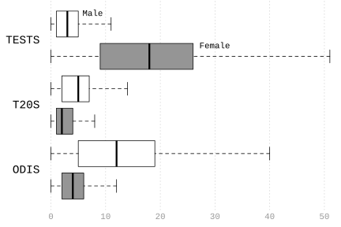
The Laws of Cricket are…
Optimality models are analogous to rulebooks for games.
- Eric Charnov
From Charnov and Orians (1973), unpublished monograph:
Building optimality models requires at least two things — first, the choice of a goal (what is being optimized?), then the choice of the game that the organism will take part in. The game gives the constraints or rules within which the organism must operate.
We observe Simon hit a ball with a strange flat board…
“Simon must be playing cricket.”
We classify his action as a move in cricket.
“What are the Laws of Cricket again?”
Our interpretation sets off a cascade of entailments:
Why did Simon hit the ball?
“Because he wants his team to score more points.”
What Aristotle called a final cause.
“Because the ball was bowled to him.”
Do not ask me to explain cricket batting strategies.
“Because he is playing cricket.”
Sometimes called naive action explanation.
SYNONYMS: Adaptationism, Optimization Analysis, Rational Accommodation.
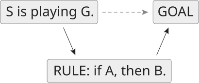
When seeking to explain intentional behavior, we revise these descriptions until we arrive at a set that makes what the agent does rational in its circumstances.
But enough with philosophical stage setting, let’s get on with the science!
An organism must choose one habitat from a finite set of alternatives.
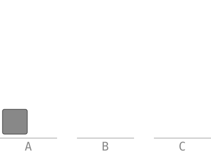
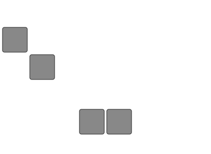
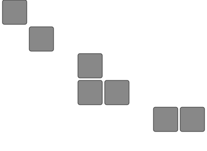
Over time, these decisions pile up. The result is a species distribution.
of habitat selection…
Optimality model
The Ideal Free Distribution (IFD) defines general rules of habitat selection that structure individual decisions.
Reason forward from utility to choice.
Statistical models
Species Distribution Models (SDMs) describe the aggregate distributional effect of actual or observed habitat selection by individuals.
Reason backward from choice to utility.
Let \(E_{i}\) be net energetic output of habitat \(i \in 1, ..., K\) at density \(n_{i}\).
\(E_{i}/n_{i}\)
The payoff to each individual is the average productivity.
\(\text{choose } i^{*} = \arg\max_{i} \; E_{i}/n_{i}\)
An individual always prefers the habitat with the highest payoff.
\(E_{i}/n_{i} = E_{j}/n_{j} \;\; \forall_{i,j} \mid n_{i}, n_{j} > 0\)
Individuals are indifferent when payoffs are equal across occupied habitats.
\((n_{1}, \dots, n_{K})\)
The equilibrium implies a habitat distribution.
The baseline suitability \(B_{i}\) with density-dependent effects \(f_{i}(n_{i})\).
\[ E_{i}/n_{i} = B_{i} - f_{i}(n_{i}) \]
\(E_{i} = n_{i}(B_{i} - f_{i}(n_{i}))\)
Net energy output, with \(n_{i}B_{i}\) and \(n_{i}f_{i}(n_{i})\) the aggregate output and cost.
\(f_{i}(n_{i}) = B_{i} - E_{i}/n_{i}\)
The difference between the baseline and realized suitability, the average cost.
Let \(AP = E/n\) and \(MP = dE/dn\), then…
\[ AP - MP = n f'(n) \]
with \(n f'(n)\) being the total effect on the population of one more individual.
Decreasing returns to scale: \(MP < AP \iff f'(n) > 0\)
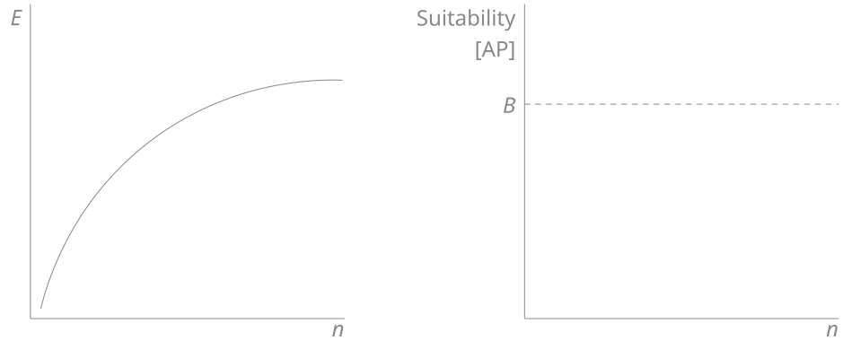
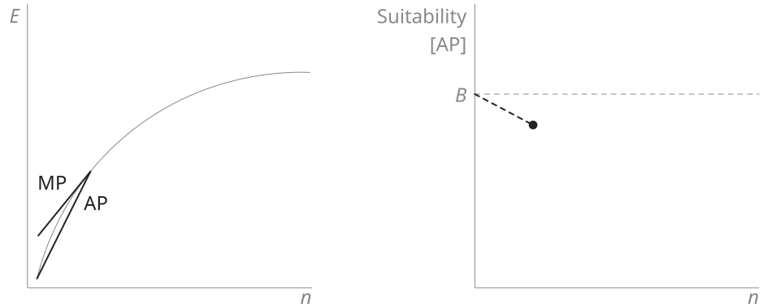
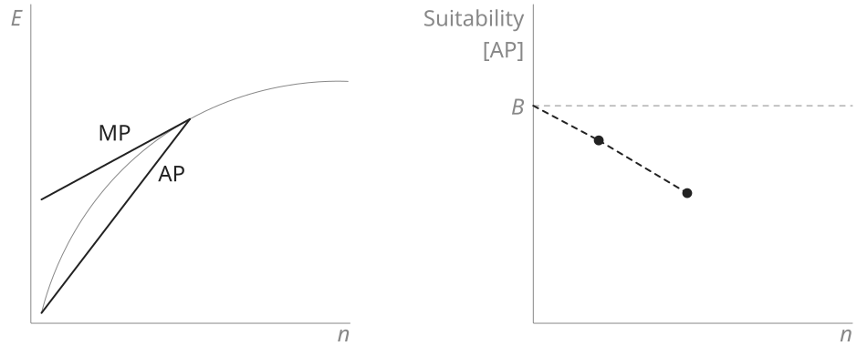
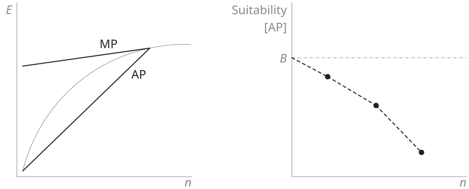
Increasing returns to scale: \(MP > AP \iff f'(n) < 0\)
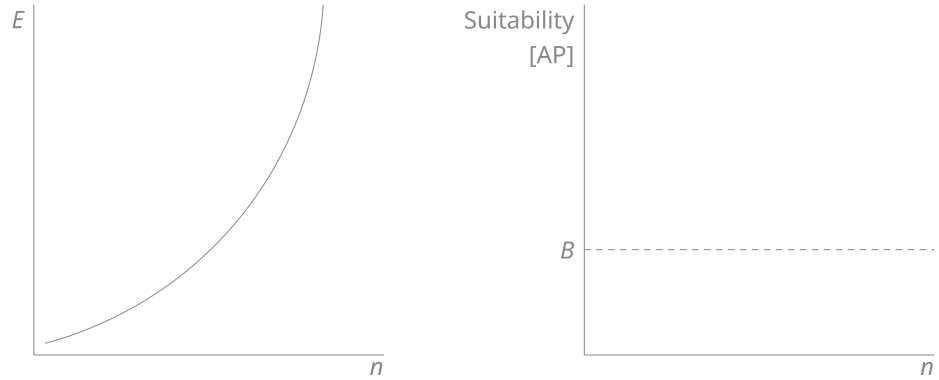
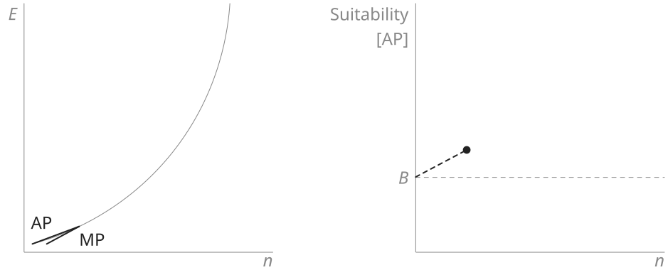
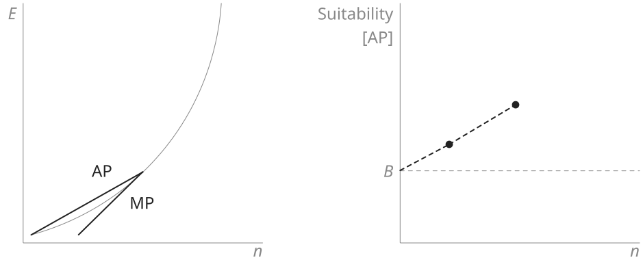
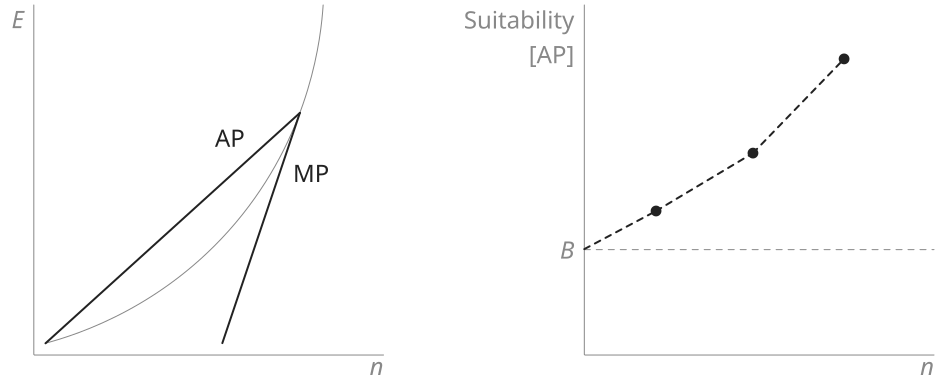
Let \(N = \sum_{j} n_{j}\) and \(Q = \sum_{j} E_{j}\) be the regional population and energetic output, then equilibrium implies that
\[ \frac{n_{i}}{N} = \frac{E_{i}}{Q} \]
The proportion of the population in a habitat will be equal to its contribution to regional production.
GOAL: Model how a population is distributed across a set of habitats:
\[ E\left[\frac{n_{i}}{N}\right] = p_{i} \]
where \(p_{i}\) is the expected share of the population in habitat \(i\) and is a function of environmental characteristics:
\[ p_i = g(X_i), \quad \sum_{i} p_{i} = 1 \]
For \(K\) discrete habitats, each individual independently selects one habitat with probability \(p_{1}, \dots, p_{K}\). Then
\[ (n_{1}, \dots, n_{K}) \sim \mathrm{Multinomial}(N; p_{1}, \dots, p_{K}) \]
and
\[ E\left[\frac{n_{i}}{N}\right] = p_{i} \]
\[ p = \textrm{softmax}(X\beta) \]
CHALLENGE: The species abundance, \(N\), is rarely if ever known.

Less than ~6.5% of the Grand Staircase-Escalante National Monument has been subject to archaeological survey (as of 2020).
CHALLENGE: Absolute measurements of habitat conditions are ambiguous.
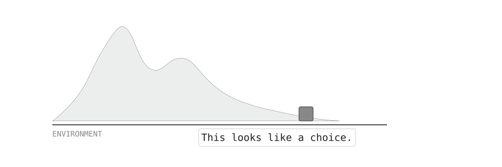
It matters what the available alternatives are.
CHALLENGE: Species operate under different constraints.
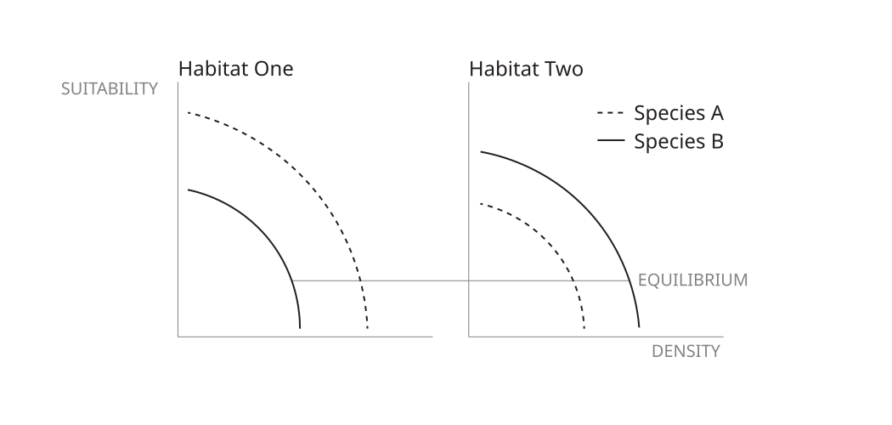
Archaeological populations of foragers and farmers in the GSENM.
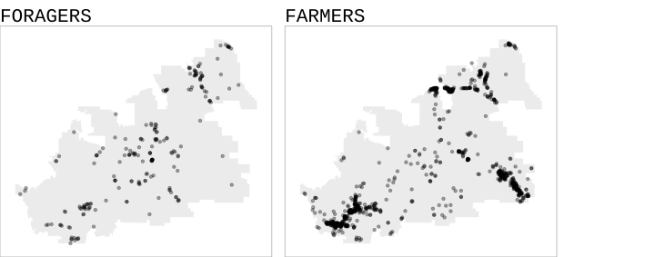
A popular way to handle these challenges is with a Poisson process model like MaxEnt.
You type up some R code, run it, and…
Variation in habitat preferences…
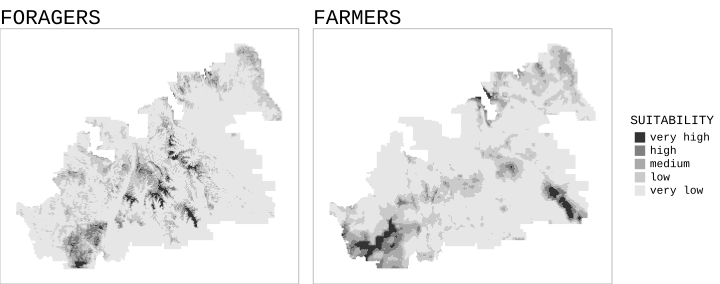
do species always choose their habitats?
It is tempting to distinguish between Species Distribution and Habitat Suitability models, letting the former be merely correlative and leaving the latter to have the force of necessity implied by IFD rules.
I am fine with this view so as long as we accept that the moment we interpret the behavior as habitat selection, the cascade of IFD entailments must inevitably follow.
If it was all mere correlation, intentional behavior would be incoherent, sort of like…
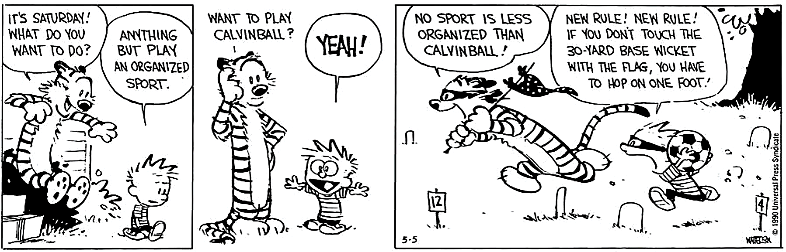